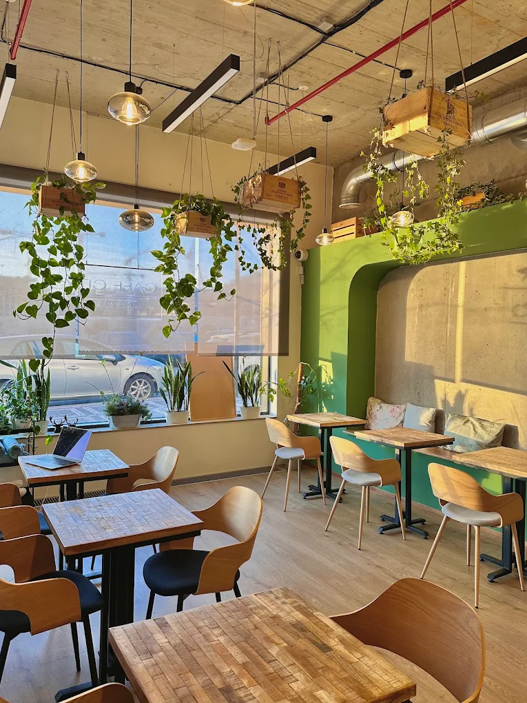
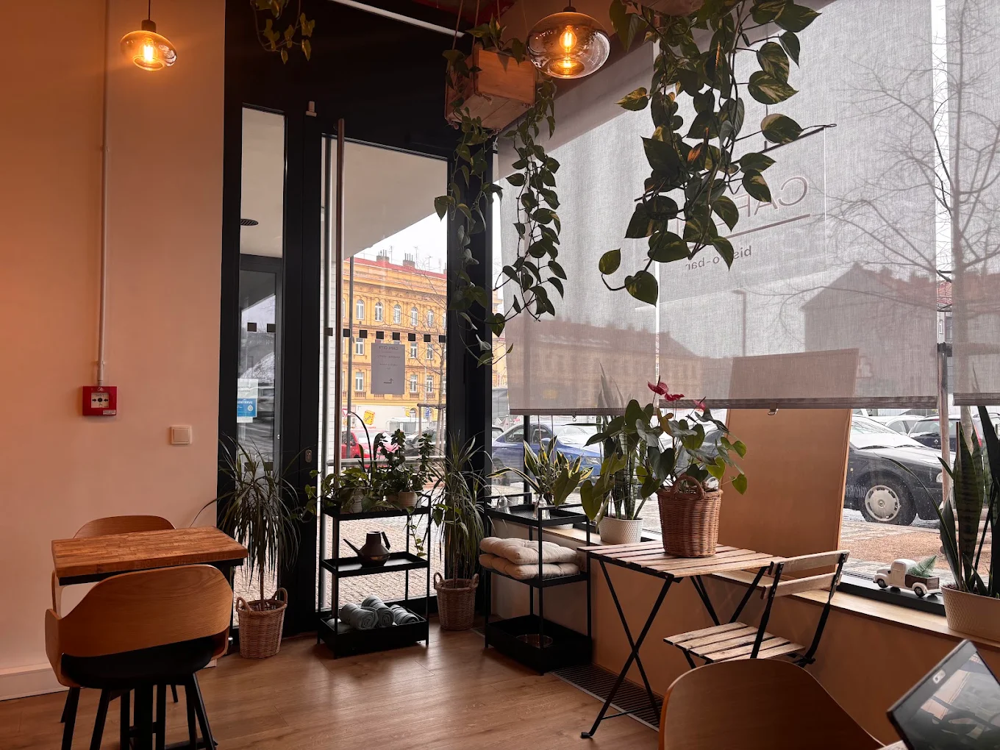
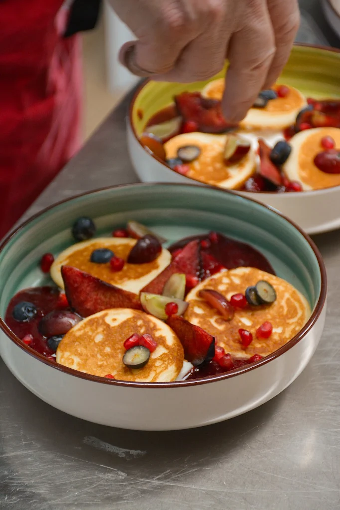
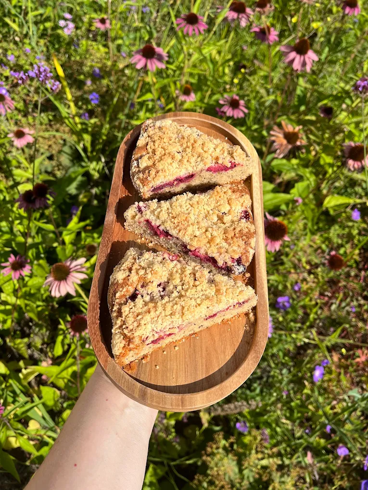

Kavárna · Bistro · Cowork · Smíchov
Dobré kafe,
klidné místo pro práci i pohodu.
Julius Meinl káva, domácí limonády, autorské mocktaily, čerstvé sendviče a teplá jídla — každý den v srdci nového Smíchova.
O podniku
Bistro a cowork v jednom
CAFE CITY najdete na ulici Šiklové v nové čtvrti Smíchov City, jen pár minut od Anděla. Pečeme a vaříme s láskou — od snídaní přes lehké obědy až po sladké dobroty k odpolední kávě. Denně připravujeme čerstvé sendviče a obložené chleby, ideální na svačinu nebo rychlý oběd s sebou do kanceláře.
Vedle kavárenské části máme i oddělenou klidnou coworkingovou místnost s WiFi a přístupem k tiskárně — ideální, když si potřebujete v klidu odpracovat pár hodin mimo domov.

Atmosféra
Nahlédněte dovnitř




Co nabízíme
Nabídka
Orientační přehled nabídky sestavený z veřejně dostupných informací o podniku. Aktuální denní menu a ceny rádi upřesníme telefonicky.

Snídaně
Čerstvé pečivo, vejce, ovesné kaše a lehké ranní talíře — perfektní start dne.

Sendviče & obložené chleby
Denně čerstvě připravované varianty na svačinu, oběd nebo s sebou do kanceláře.

Teplá & studená jídla
Domácí lehké obědy, které vaříme a pečeme s láskou — vhodné i pro vegany.

Káva & nápoje
Káva Julius Meinl, domácí limonády, autorské mocktaily a pivo Bernard.
Kdy nás najdete
Otevírací doba
Kuchyně zavírá dříve než kavárna — na poslední teplé jídlo tedy nezapomeňte přijít včas.
Kavárna
| Pondělí | 8:00–19:00 |
| Úterý | 8:00–19:00 |
| Středa | 8:00–19:00 |
| Čtvrtek | 8:00–19:00 |
| Pátek | 8:00–19:00 |
| Sobota | 8:30–15:00 |
| Neděle | Zavřeno |
Kuchyně
| Pondělí | 8:00–14:00 |
| Úterý | 8:00–14:00 |
| Středa | 8:00–14:00 |
| Čtvrtek | 8:00–14:00 |
| Pátek | 8:00–14:00 |
| Sobota | 8:30–14:00 |
| Neděle | Zavřeno |

Najdete nás zde
Jak se k nám dostat
Šiklové 3385/6, Praha 5-Smíchov — pár minut chůze od stanice metra Anděl a tramvajové zastávky Na Knížecí.